Samples/Oscs
Each pad can trigger up to eight samples or eight oscillators, which are assigned in eight individual layers. Each layer has identical, independently assignable parameters.
Tap Samples/Oscs to cycle through its four available tabs.
Use the Partial Preset field to save and load partial pad presets. These can be used to save and load the complete state of the synthesis engine that processes a pad, along with a selection of setup parameters, including filter and drum effect chains and expressive Mod Matrix routings.
Tap the three dots icon and then select Save to save the current pad state as a partial preset.
Tap the three dots icon and then select Load to load a partial preset saved on the internal drive or any connected external drives.
You can access the Settings window, which lets you configure certain settings in the Samples/Oscs tab, from any of the four tabs by tapping the gear icon.
Use the Link Slices selector to set how the start point and end point of a slice in a larger sample is set. You can create these slices in Sample Edit Mode > Chop Mode.
When on, changing the start point of a slice will also change the end point of the previous slice. Similarly, changing the end point of a slice will also change the start point of the next slice. Disable Link Slices if you are trying to create slices that use non-contiguous parts of the sample. This is the same as the Link Slices button in Sample Edit Mode. Use the Loop Lock selector to “link” or “unlink” the loop point from the start point. When on, the loop point is the same as the start point. When off, the loop point is independent from the start point and indicated by a separate loop marker. This is the same as the Loop Lock button in Sample Edit Mode. Use the Zero Snap selector to enable or disable the Zero Snap feature, which forces start points, end points, and loop points to occur only at the waveform’s “zero-crossings.” This can help to avoid clicks and glitches when playing a sample. This is the same as the 0 Snap button in Sample Edit Mode. To close the Settings window, tap Close, the X in the upper-right corner, or anywhere outside the window.
The first Samples/Oscs tab contains the sample waveform or oscillator waveform for each layer.
Tap each layer number (Layer 1–8) under the waveform to select it. When selected, its sample or oscillator waveform will be shown in the upper half of the screen and its settings will be shown in the lower half.
Use the Sample / OSC selector to set the function for each layer. This will determine the appearance of this tab. When a sample is selected, this tab displays controls for its pitch, timing, and playback. When an oscillator is selected, this tab displays the oscillator parameter controls.
When set to Sample, the following controls are available. Click here to jump to the Oscillator controls.
The upper half of the screen shows the waveform of the sample on the currently selected layer. The lower half shows the editing controls.
The waveform display shows the “active” section of the sample waveform. Swipe left or right on the waveform to move through it.
Above the waveform is the timeline, shown in bars, beats, and ticks.
Use the bottom-most Q-Link knob in the fourth bank to zoom in or out of the sample waveform.
Use the Sample field to select the sample file for that layer. Remember that the sample has to be loaded into the project’s sample pool beforehand. For information on how to load samples into a project, please see the Browser chapter.
Important: The sample parameters in the Samples/Oscs tabs work in conjunction with Chop Mode (in Sample Edit Mode). Here’s how it works:
When working in Sample Edit Mode and using Chop Mode to divide a sample into slices for your pads, you can convert a slice using Non-Destructive Slice or Pad Parameters.
A Non-Destructive Slice will let its pad to refer to that slice when you press it; the original sample remains intact, and each slice marker is like a “bookmark” for a pad. In Track Edit Mode, you’ll see that the pad/layer to which it’s assigned has its Slice drop-down menu set to the corresponding slice number in the original sample. Playing that pad will cause it to refer to that slice marker like a “bookmark” instead of creating an entirely new sample of that slice. This means that you no longer have to clutter your project with a new sample for every slice (though you can still use this earlier method, if you prefer).
A slice converted using Pad Parameters is very similar to a non-destructive slice described above. The difference is that in Track Edit Mode, the pads/layers they’re assigned to have their Slice drop-down menus set to Pad (instead of the slice number), and the start and end points will correspond to the slice markers in the original sample.
Tap the trash can icon next to the sample field to remove the file from the layer.
The green/S marker and red/E marker are the start point and end point (respectively). These two points define the region of the sample that will be played.
To move the start point or end point, do any of the following:
• Tap and drag the S or E marker left or right.
• Use the Start or End fields shown below the waveform.
• When the Q-Links are set to screen mode, you can use them to adjust the start and end points in fine and coarse adjustments. For MPC hardware with four Q-Links, the first bank adjusts the start point, and the second bank adjusts the end point.
Note: When Loop Lock is on, the loop position (as determined by the Loop field, if enabled) is the same as the sample’s start point. When off, the loop position is independent from the start point.
Use the Loop field to determine the position where the sample’s playback will repeat when Pad Loop is activated.
Note: When Loop Lock is on, the loop position is the same as the sample’s start point. When off, the loop position is independent from the start point.
Use the Tail Length and Tail Start fields to add adding extra audio tail to any chopped sample. This is useful for things like making an abrupt end to a sample sound more natural or adding experimental looping effects to a sample. The Tail Length parameter enables the sample tail and set its total length, and the Tail Start parameter sets the starting point within the tail for looping.
Use the Repeats field to set a sample to play a specified number of times. First make sure Pad Loop is set to On, then use this field to set the number of times you want to have the sample loop between the Sample Loop and End points. For example, a value of 4 would repeat the selected area of the sample 4 times.
Note: The behavior difference between Repeats set to 0 and 1 is only evident when a Pad’s Sample Play parameter is set to Note On. Then, when hold a note, a Repeat value of 0 will create infinite repeats, and a value of 1 will play a sample one time through.
Use the Slice field to select what part/parts of the sample will play:
• All: The entire sample will play.
• Pad: The sample will play from the Pad Start position to the Pad End position, described earlier. This also lets
you activate Pad Loop (if the Sample Play field in the LFO Modulation tab is set to Note On).
• Slice 1, 2, 3, etc.: If you have sliced the sample in Chop Mode, you can select which slice will play when you
trigger the pad.
When Slice is selected, you can tap the Slice Motion icon to trigger a different sample slice each time a pad is played.
Use the Motion setting to select Increment, which increments the slice number with each new note event, or Random, which plays your slices in a random order.
Use the Slice field to set the starting slice.
Use the Cycles field to select how many of the slices are played.
Tap the pad repeatedly, or turn Note Repeat on and hold the pad, to hear the slices of your chopped loop play.
Use the Play Offset field to shift a sample window between the Start, End, and Loop points across the sample without altering their relative positions. For example, if you set these points to frame the first 1/16th note of a one-bar sample, you can use the Play Offset to shift that window to different 1/16th note positions within the sample. You must retrigger the sample to hear offset changes.
Use the Reverse button to select in which direction the sample will play. When on, the sample will play in reverse. When off, the sample will play in the normal forward direction.
Use the Pad Loop button to cycle through the available Pad Loop modes.
Important: For Pad Loop to work, you must (1) set the Sample Play field (in the Global tab) to Note On instead of One Shot and (2) set the Slice field (in the first Samples tab) to Pad instead of All or a slice number.
• Off: The sample will not loop.
• Forward: You can hold down the pad to cause that sample to repeat from the Loop Position to
the end of the sample. Release the pad to stop the repeating playback.
• Reverse: You can hold down the pad to cause that sample to play in reverse, repeating from the
end of the sample to the Loop Position. Release the pad to stop the repeating playback.
• Alternating: You can hold down the pad to cause that sample to play from the Loop Position to
the end of the sample and then play in reverse until it reaches the Loop Position again. This will repeat as long as you are holding the pad down. Release the pad to stop the repeating playback.
Tap BPM Sync to enable or disable BPM Sync.
When BPM Sync and Warp are both enabled, the sample’s BPM will be “locked” to the tempo of the project.
When BPM Sync is disabled but Warp is enabled, the sample will be independent of the tempo of your project—use the Stretch field to lengthen or shorten a sample. Tap Warp to enable or disable warping of the sample.
When enabled, lengthening or shortening the sample (based on the BPM) will not change its pitch.
When disabled, lengthening or shortening the sample will also change its pitch and vice versa.
Note: The Warp algorithms are very CPU-intensive and can result in audio drop-outs during playback if used too freely. Be mindful of how (and how often) you use the warp function. You can reduce the CPU resources required by doing any/all of the following:
• Avoid using extreme Stretch values.
• Minimize the amount of pitch adjustment (e.g., the Semi and Fine parameters) of warped audio.
• Avoid warping very small sample regions.
• Warp as few samples or sample regions as possible (i.e., reduce the number of total number of voices of the polyphonic limit that use the Warp algorithm at a given time), especially instances where the warped regions start at the same time.
• Avoid rapidly triggering samples that are warped.
• If you have warped samples used in a drum kit, consider using the Flatten Pad function to consolidate the affected pad’s layers into one audio sample (see here to learn about this). After you flatten the pad, its sample/samples no longer need to be warped. Semi lets you transpose the selected layer up to 36 semitones up or down. This will affect the length of the sample (if Warp is off). This is the same as the Semi knob on the second Samples tab. The analyzed Key of the sample is displayed next to the Semi field and will adjust based on this value. Fine provides fine-tuning of each layer by cents. This will affect the length of the sample (if Warp is off). This is the same as the Fine knob on the second Samples tab. Use the Stretch field to set the “stretch factor,” which affects how the sample is warped (if Warp is on). Use the BPM field to enter a tempo, which affects how the sample is warped (if Warp is on). Use the Algorithm field to select the audio warp algorithm for the sample: Default, Pro Ten, or Repitch. The Default algorithm can be set in the Preferences > Audio/Export menu.
Note: Changing the Algorithm setting here will override the Preferences setting.
When OSC is selected as the layer source, the following controls are available.
Use the Oscillator field to open the Oscillator menu and select a waveform for the layer.
Some oscillator types may require additional content. Tap the Get Oscillator Content button to open the Activations tab of the Preferences menu, where you can download the required MPC Oscillator Content.
Semi lets you transpose the selected oscillator layer up to 36 semitones up or down.
Fine provides fine-tuning of each layer by cents.
All oscillator types include Decay and Start Phase parameters.
Decay adjusts the length of the oscillator amplitude decay.
Start Phase sets where the in waveform shape the oscillator begins when played.
Depending on the oscillator type selected, the following additional parameters will be available:
Warm Sine
• Precision: Controls the accuracy of the synthesis algorithm.
• Fuzz: Adds noise and harmonic texture. Saw / Square
• Shape: Morphs the waveform between saw and square.
• Tone: When set to a lower value, this reduces high‑frequency content by morphing the waveform toward a sine
shape. Digital Saw
• Direction: Switches between saw and ramp waveforms. Pulse
• Pulse Width: Adjusts the width of the pulse waveform. Noise
• Tone: Controls the cutoff frequency of an internal low‑pass filter.
FM2
• Level: Controls the amount of FM modulation applied.
• FM Decay: Sets the decay time of the second operator.
• Coarse: Controls the coarse pitch of the second operator.
• Tune: Controls the fine pitch of the second operator.
• Feedback: Sets the amount of feedback applied to the second operator. RM3
• Coarse 1–3: Controls the pitch of each operator.
• Decay 1: Controls the decay of the first operator.
• Decay 2–3: Controls the decay of the second and third operators. Algorithmic Waveforms and Single‑Cycles
• Feedback: Controls the amount of FM applied to the oscillator.
• Feedback Shape: Applies waveshaping to the feedback signal. Wavetables
• Position: Selects the waveform index within the wavetable.
• XFade: Controls smoothing when transitioning between adjacent waveforms.
Oscillator parameters can also be modulated using the Mod Matrix in the same way as other parameters.
The second Samples/Oscs tab (Tune/Mix) contains controls for layer pitch, volume level and panning.
Tap the Layer 1–4/Layer 5–8 button to toggle between visible layers.
When the layer is set to Sample, use the Sample field to select the sample file for that layer. Tap the trash can icon next to the sample field to remove the file from the layer.
When the layer is set to Oscillator, use the Oscillator field to select the waveshape for that layer.
Use the MPCe field to enable or disable individual quadrants on each layer of the pad. MPCe quadrants can be specified using automation for a pad, or you can use the Mod Matrix to set up expressive routings.
Semi lets you transpose the selected layer up to 36 semitones up or down. When the layer is set to Sample, this will affect the length of the sample (if Warp is off). This is the same as the Semi field on the first Samples/Oscs tab.
Fine provides fine-tuning of each layer by cents. When the layer is set to Sample, this will affect the length of the sample (if Warp is off). This is the same as the Fine field on the first Samples/Oscs tab.
Level lets you adjust each layer’s volume, letting you control the “balance” of the samples or oscillators assigned to the pad.
Pan adjusts the stereo placement of the respective layer.
The third Samples/Oscs tab (Velocity) contains the controls for sample offset and layer velocity range.
Tap the Layer 1–4/Layer 5–8 button to toggle between visible layers.
When the layer is set to Sample, use the Sample field to select the sample file for that layer. Tap the trash can icon next to the sample field to remove the file from the layer.
When the layer is set to Oscillator, use the Oscillator field to select the waveshape for that layer.
When the layer is set to Sample, use the Offset slider to determine a time offset for the sample’s playback.
• Positive values (right of center): When the pad is played, playback will start immediately but at a later point in the
sample specified by the offset value.
• Negative values (left of center): When the pad is played, playback will be delayed by the amount specified by the
offset value.
Use the Vel Start and Vel End knobs to define the velocity range of each layer.
A range from 0 to 127 lets the layer respond to the entire velocity range which is input from the respective pad while, for example, a range from 100 to 127 lets the layer respond only to higher velocity levels. By assigning several samples of one instrument, you can create a realistic-sounding “multi-sample” by adjusting the velocity ranges of each layer accordingly.
For example, you may have three samples of a drum hit with low force, medium force, and high force. You can set each sample to a layer and set the Velocity ranges so only low velocities trigger the low-force sample, only mid-range velocities trigger the medium-force sample, and only high velocities trigger the high-force sample.
The fourth Samples/Oscs tab (Random) contains the controls for adding randomization to sample and oscillator parameters such as pitch, level and panning.
Tap the Layer 1–4/Layer 5–8 button to toggle between visible layers.
When the layer is set to Sample, use the Sample field to select the sample file for that layer. Tap the trash can icon next to the sample field to remove the file from the layer.
When the layer is set to Oscillator, use the Oscillator field to select the waveshape for that layer.
Use the Pitch knobs to adjust the amount of randomization applied to each layer’s pitch.
Use the Level knobs to adjust the amount of randomization applied to each layer’s volume.
Use the Pan knobs to adjust the amount of randomization applied to each layer’s stereo placement.
When the layer is set to Sample, use the Offset knob to adjust the amount of randomization applied to the sample layer’s time offset.
When the layer is set to Oscillator, use the Offset knob to adjust the amount of randomization applied to the oscillator Start Phase.
The All Layers section will apply randomization to all layers for the following envelope parameters: Attack, Decay, Cutoff and Resonance. Use the Depth slider to control the amount of envelope randomization applied overall.
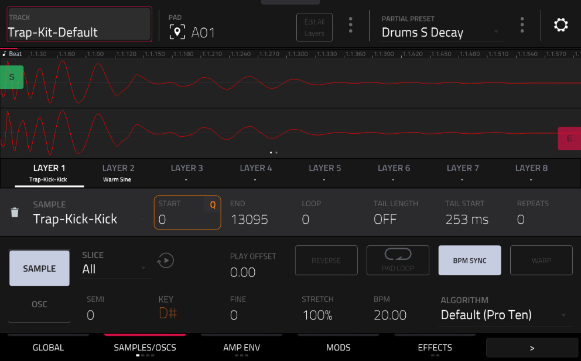
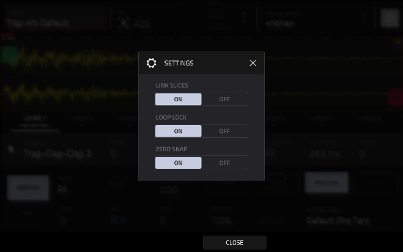
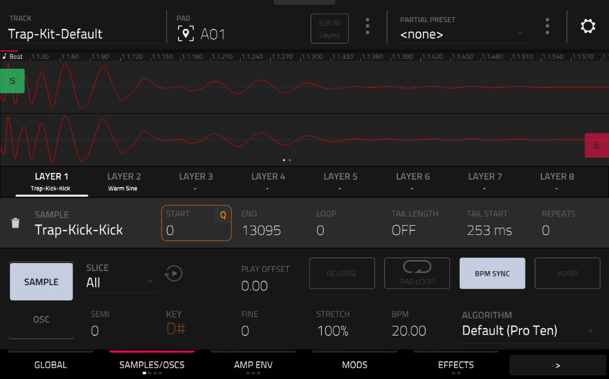
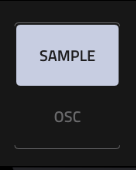
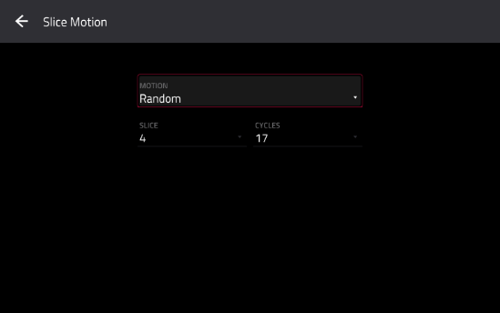
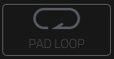
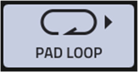
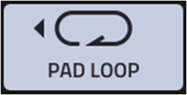
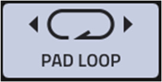
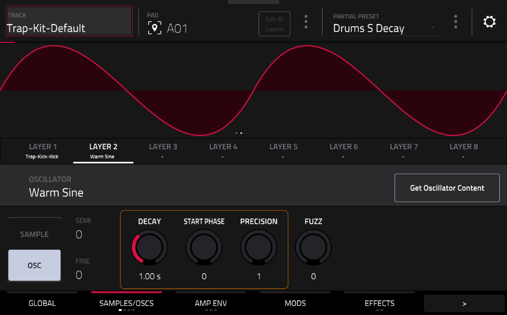
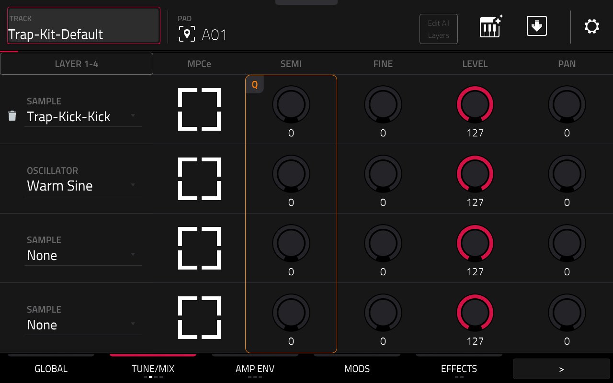
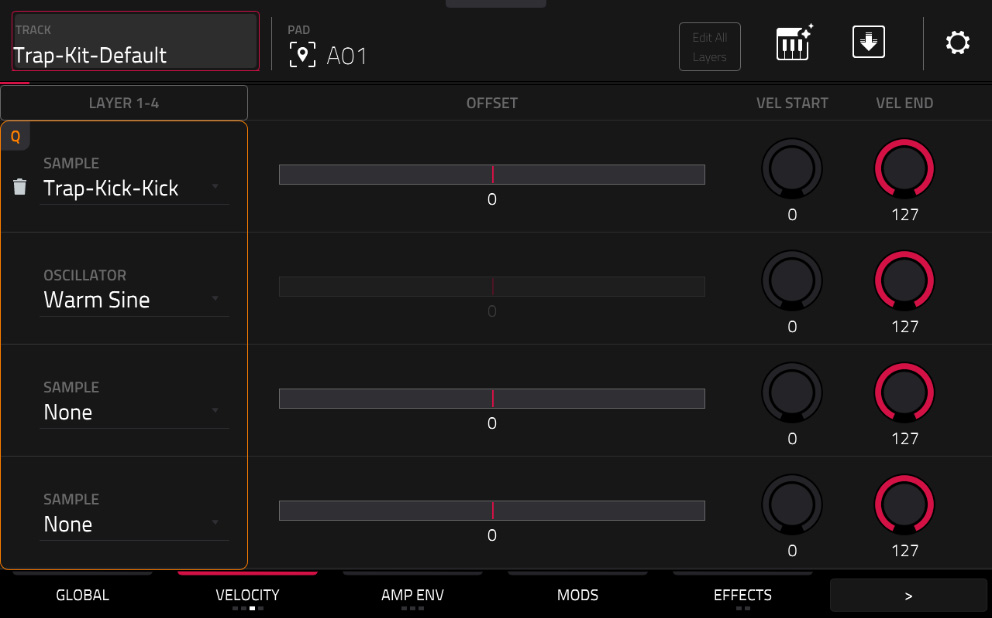
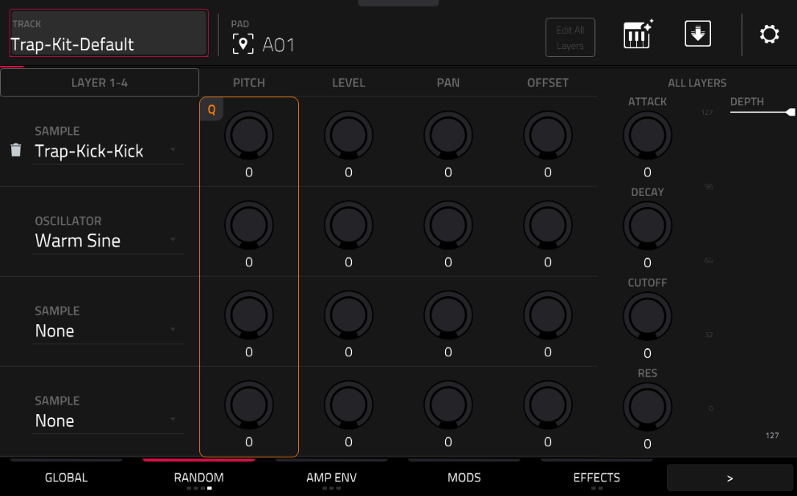